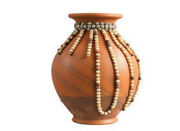
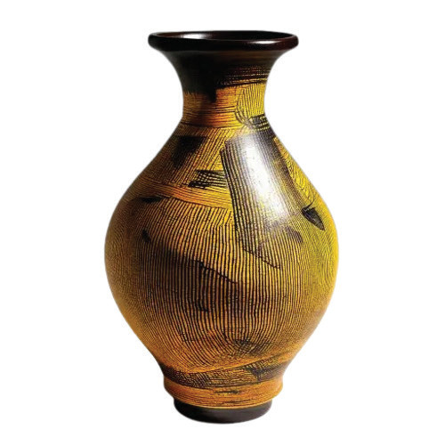

(d) Decorative ornamentation
To add decorations to the pot in order to add an interesting look, use beads, pieces of metal or glass. Attach these items using glue suitable for clay and decorations to hold them effectively. Figure 8 shows a pot decorated with bead ornaments.

(e) Decoration using paint
To decorate a pot, use paint that adheres well to the surface of the pot, which is water-resistant. Use a thin brush for hand-drawn designs such as flowers, leaves, or natural landscapes. Before decorating, apply one base colour to smooth the surface of the pot and let it dry completely. Use different colours for your decorations depending on the design you have chosen. Decorating pots with paint requires special equipment and depends on your creativity. Your decorations can reflect a feeling, theme, or style that you prefer. Figure 9 shows a pot decorated with paint.
